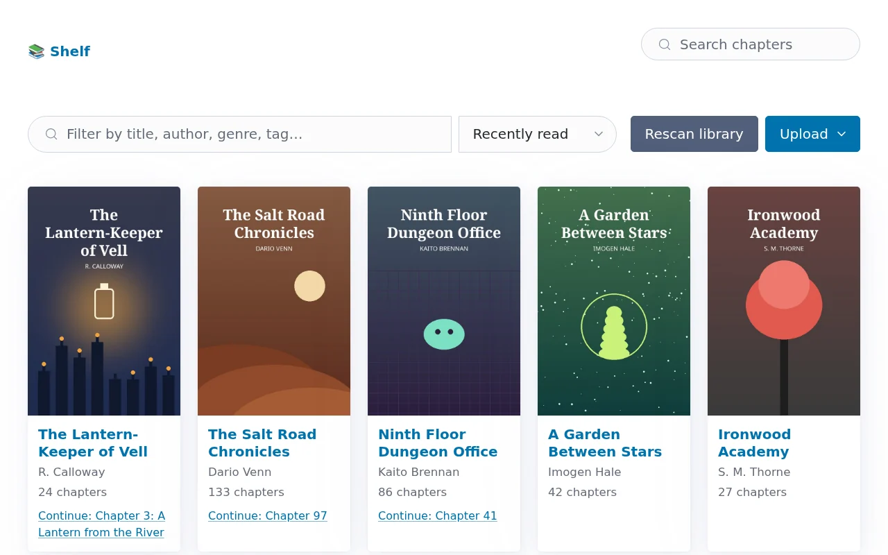
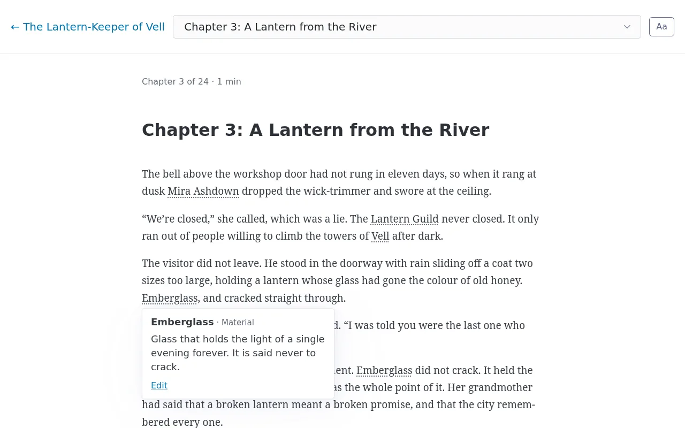
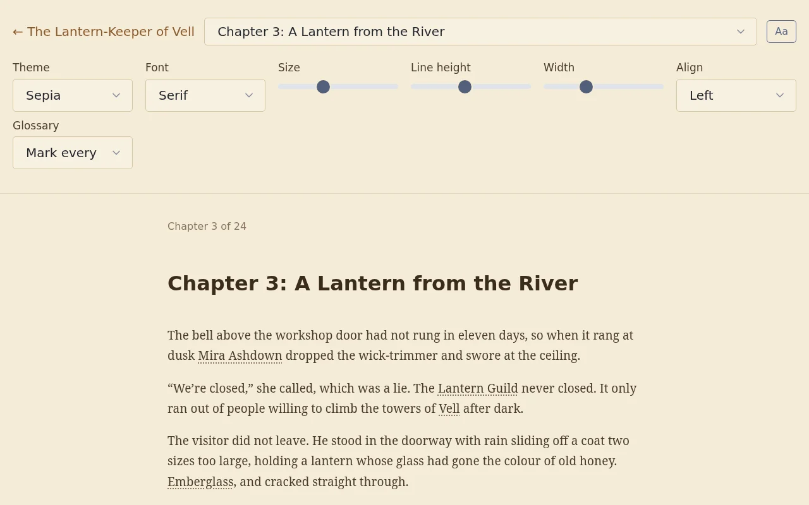
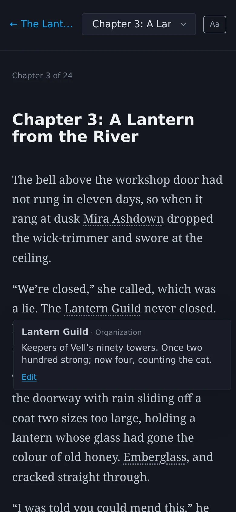
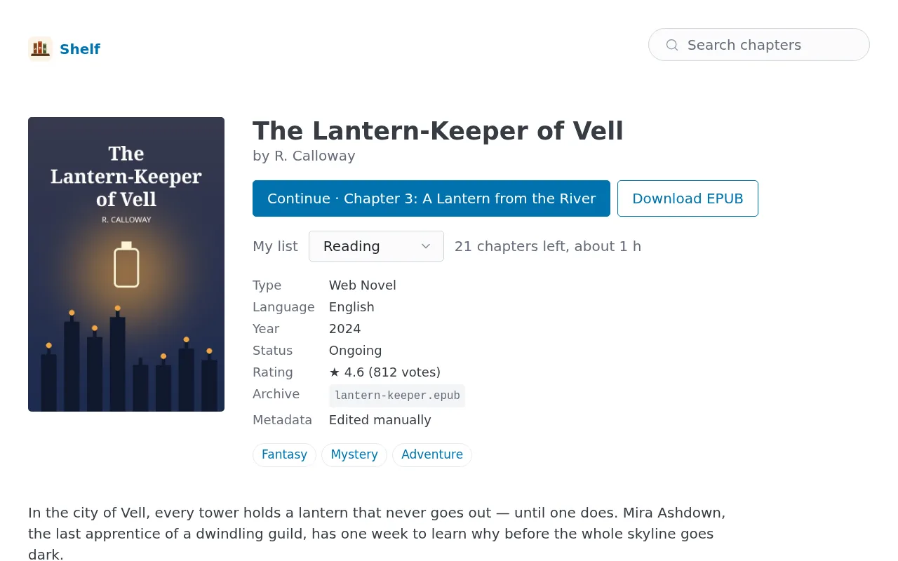
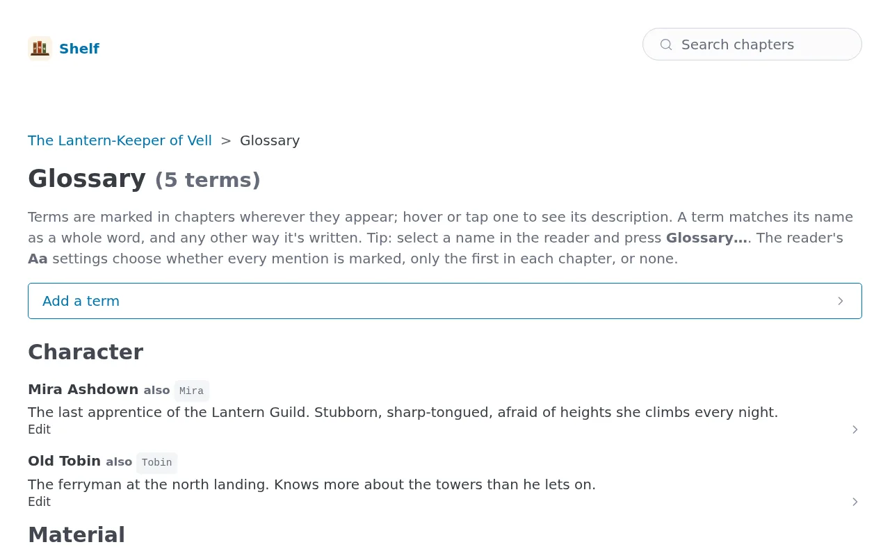
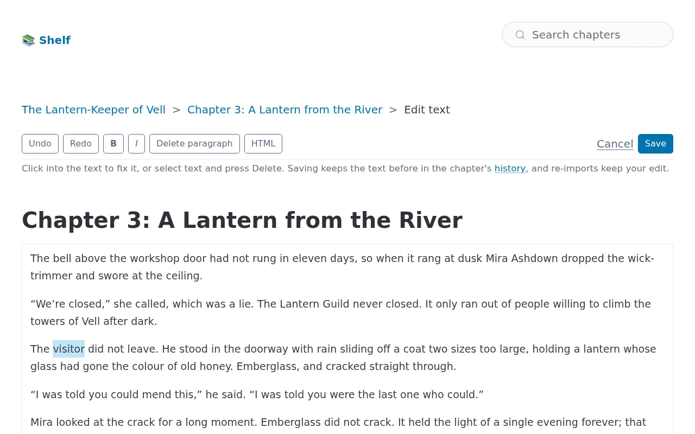
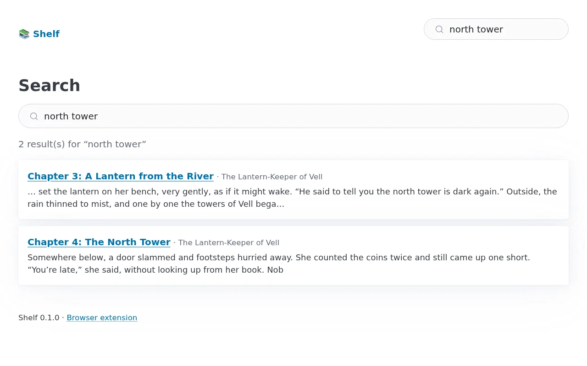

Your web-novel archives, as a library
Shelf is a self-hosted reader for web novels you've saved. Point it at a folder of WACZ web archives or EPUBs and it finds the chapters, puts them in order, fills in the details from NovelUpdates, and gives you a calm, distraction-free place to read.
Latest release · Docker image for amd64 and arm64

How it works
Shelf reads what you've already saved. It never logs in anywhere or scrapes a site for you.
Save the novel
Archive the chapters with ArchiveWeb.page or Browsertrix, send pages with the Shelf Capture browser extension, or use an EPUB or pages saved with Ctrl+S.
Drop it in the library
Put the files in Shelf's library folder or upload them in the browser. Shelf pulls out each chapter's text, numbers it and spots the gaps.
Read anywhere
Open Shelf on your computer, tablet or phone. It remembers where you stopped in every novel.
What it does
Built for the messy reality of web novels: chapters spread across sites, renamed posts, missing pages, and text that sites try to hide.
Finds the chapters
Pulls the story out of each page, dropping menus, share buttons and comments, and orders chapters by number, from “Ch. 7.5” to “第12章”. It even finds chapters a site loaded with JavaScript.
Shows what's missing
Lists gaps in the numbering and why each chapter is missing: never saved, locked, or only a preview. When a chapter was saved twice, you pick which copy to read.
NovelUpdates details
Fills in the cover, description, authors, genres, tags, rating and status from a saved NovelUpdates page, sent by the extension or uploaded.
A comfortable reader
Light, dark and sepia themes; your choice of font, size, spacing and width; arrow keys for the next chapter; and your place saved in every novel.
Glossary
Describe a novel's characters, places and terms once, and see the description wherever they appear. Terms can have other names and regular expressions.
Chapter editor
Fix typos or cut a translator's note in place. Every earlier version stays in the chapter's history, ready to restore.
Shelf Capture extension
Sends the page you're reading to Shelf exactly as your browser shows it. When Shelf is sure which novel a chapter belongs to, Alt+Shift+D sends it without asking.
EPUB export
Download any novel as an EPUB with its cover, contents and glossary, for your e-reader.
Search & trim
Search the text of every chapter you've saved, and set trim rules that remove a site's repeated notices or ads, for one novel or all of them.
A look inside
The screenshots use a demo library of made-up novels.

Reading, with a glossary
Glossary terms are underlined in the text. Hover, tap or Tab to one to see what it is.
- Select a name in the text to add it to the glossary.
- Mark every mention, only the first in each chapter, or none.

Set it up your way
The Aa menu changes theme, font, size, line height, width and alignment. Your choices apply in every novel.

On your phone, too
Shelf is a web app, so any device on your network can use it with nothing to install. Your place is saved on the server, so you can start a chapter on your computer and finish it on your phone.








Install
Shelf runs on your own computer or home server. Put your .wacz and .epub files in a library folder, start Shelf, and open localhost:8000.
# compose.yaml services: shelf: image: ghcr.io/mshamory/shelf:latest restart: unless-stopped ports: - "8000:8000" volumes: - ./library:/library # your .wacz and .epub files - ./data:/data # database, covers, saved pages
mkdir -p library data docker compose up -d
Or clone the repository and run docker compose up -d there; its compose.yaml is the same.
mkdir -p library data docker run -d --name shelf -p 8000:8000 \ -v "$PWD/library:/library" -v "$PWD/data:/data" \ ghcr.io/mshamory/shelf:latest
The container runs as user ID 1000, so the two folders need to be writable by that user.
git clone https://github.com/mshamory/Shelf.git
cd Shelf
uv sync
uv run shelf # http://localhost:8000, uses ./library and ./data
Needs Python 3.12 and uv. Each release also has a wheel you can install with pip install shelf-*.whl.
Image tags
| Tag | What it is |
|---|---|
latest | The newest release |
0.1, 0.1.0 | A specific release |
edge | The newest commit on master |
Settings
| Variable | Default |
|---|---|
SHELF_SCAN_ON_STARTUP | true |
SHELF_ALLOW_UPLOADS | true |
SHELF_FETCH_COVERS | true |
SHELF_PORT | 8000 |
More in the README.
The browser extension
Shelf Capture comes with Shelf. Use the Browser extension link at the bottom of any Shelf page to download it, then unzip it.
- Chrome, Edge, Brave: open
chrome://extensions, turn on Developer mode, choose Load unpacked and pick the folder. - Firefox: open
about:debugging→ This Firefox → Load Temporary Add-on… and pickmanifest.json.
Then set Shelf's address in the extension's Settings.